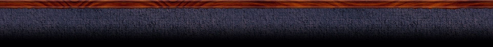
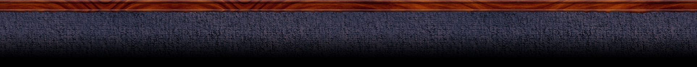

Hello, my kids call me Ann
...and I love them to pieces! Honestly, I so enjoy what I do that it’s not really fair to call it a “job”– it’s a joy!
I love to bake, do crafts, read and dance with my little ones. My own children are grown so my attention is fully on your child. Of course, that means I’ve been doing this a long time, but I have plenty of patience and tons of energy!
Lots of hugs, laughs and play.
I treat my daycare kids like I treated my own kids years ago. I try to make holidays special with parties and treats. I also like to have the families for a get-together every once in a while. The kids just love it when they get to have mom and dad see them at their second home with their friends. Parents enjoy it too!
I'm reliable and do what ever I can to meet the needs of your family. Also, my hours are flexible as needed. I like to keep my numbers small and match age groups whenever possible.
Located in Sundance, Calgary SE
Handy location near schools and the Sundance industial park.
Availability
I will have two part-time spaces available Mondays, Tuesdays, and Wednesdays, starting August 2016. Pricing adjusted for part time.Thank you for all the enquiries!
Give me a call...
Need a reference or two? No problem! Also, a few years back I did get a police check and had a refresher course on CPR. Oh, and my home is SMOKE-FREE and I give receipts.
Questions? Get in touch by emailing me at ann@anns.ca
or give me a call at (403) 256-4828.